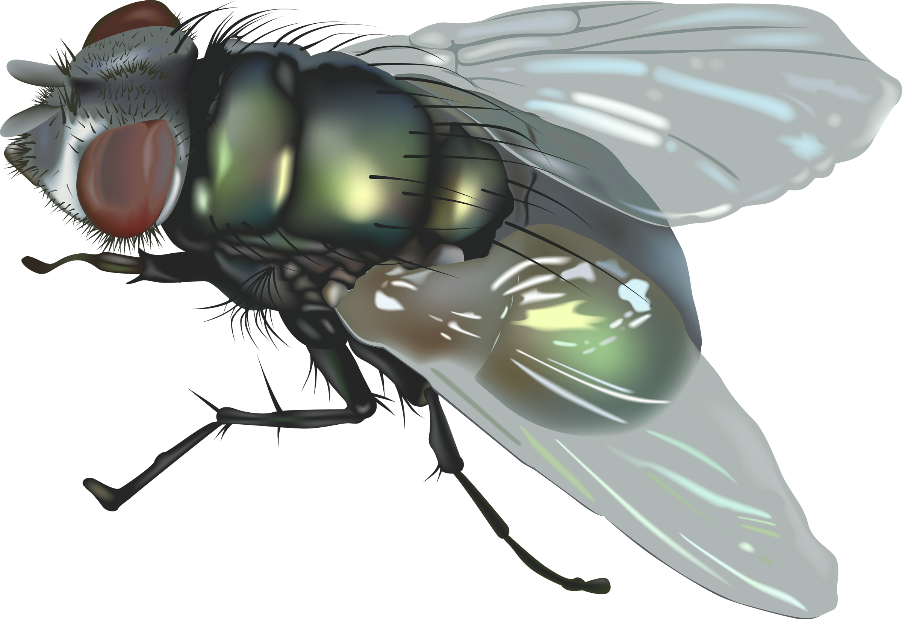
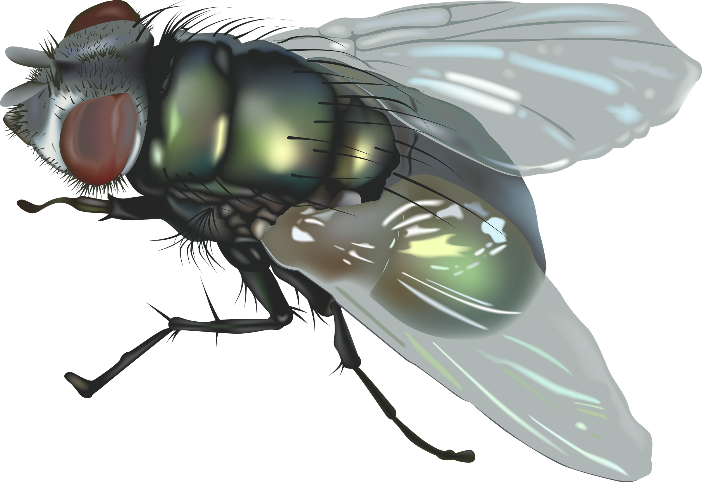

Object 1

Human being (2.6 million years ago - 1.7 million years ago): A bipedal primate known for its advanced cognitive abilities, use of complex language, and creation of diverse cultures and technologies. Humans have significantly altered the planet's ecosystems through agriculture, urbanization, and industrialization.
Back to Gallery


 
